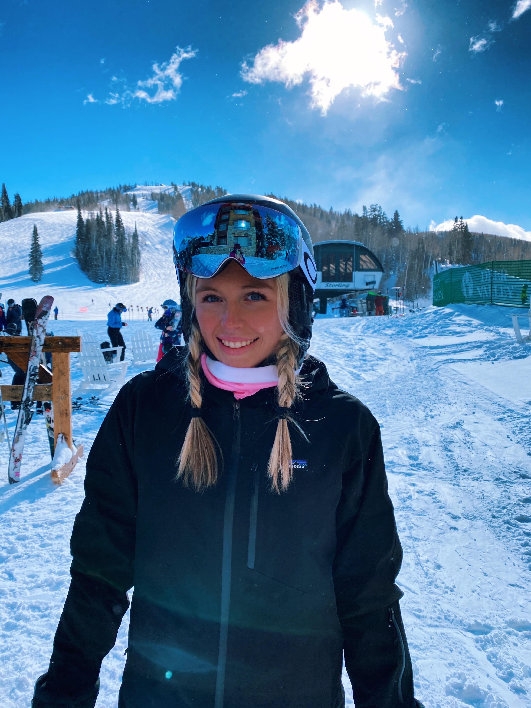
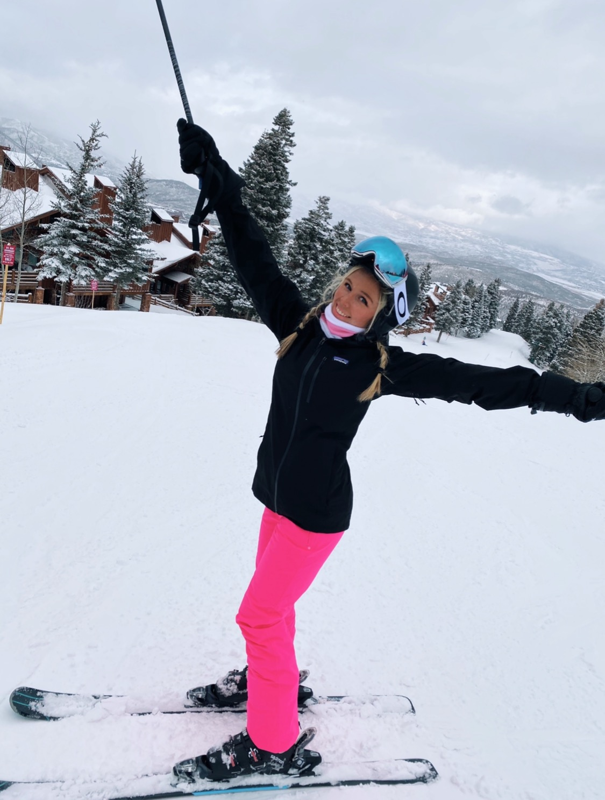

One of my favorite hobbies and activities to do is ski. I learned how to ski
when I was 10 years old and fell in love with the sport. My Dad grew up skiing
from a young age and taught me a lot of what I know. My family and I have traveled
to several mountains out west to go skiing. A few favorties are Copper Mountain,
Breckenridge, and Steamboat Springs. I still have so many more mountains on my
bucketlist to hit. So far I have enjoyed every place I have skied in Colorado and Utah.
I definietly would like to go back to Deer Valley Mountain
in the near future. Deer Valley is very comforting to me and brings back a lot of memories.
Overall I just love the mountains, views, and thrill from skiing. The runs are
super fun to explore and take in. Additionally, I love how skiing is also considered
exercise. It never feels like exercise which is even better, and I get so many
endorphins just from going down the mountain. Skiing makes me so happy and I'm
looking forward to the next mountain I get to visit.
Mountains I would like to visit: